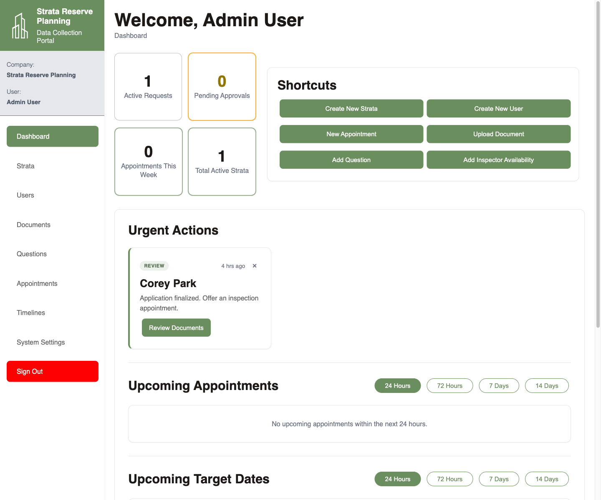
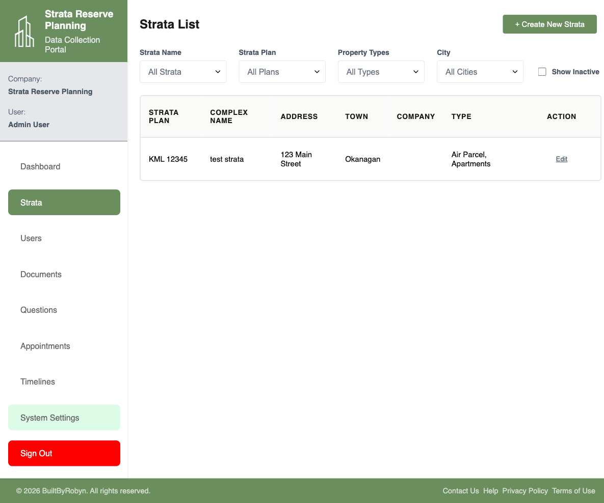
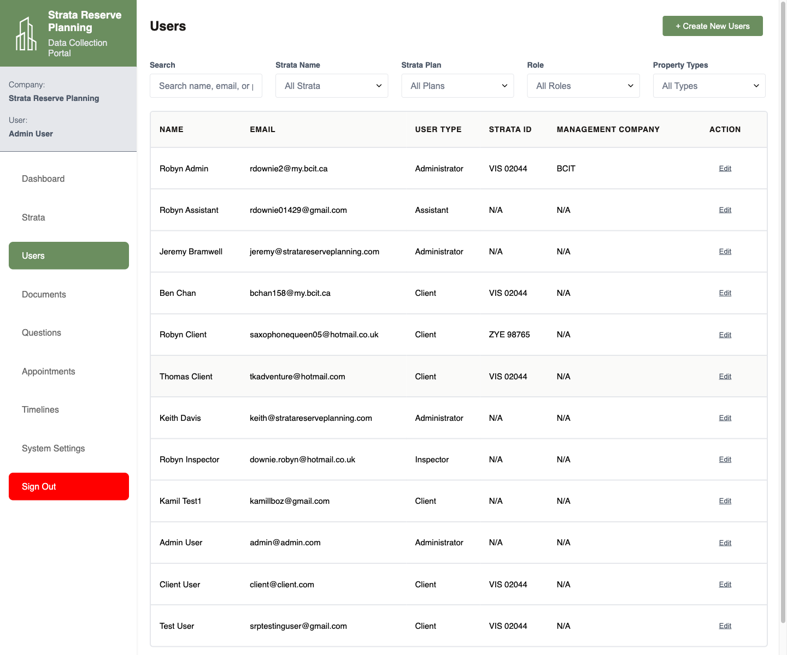
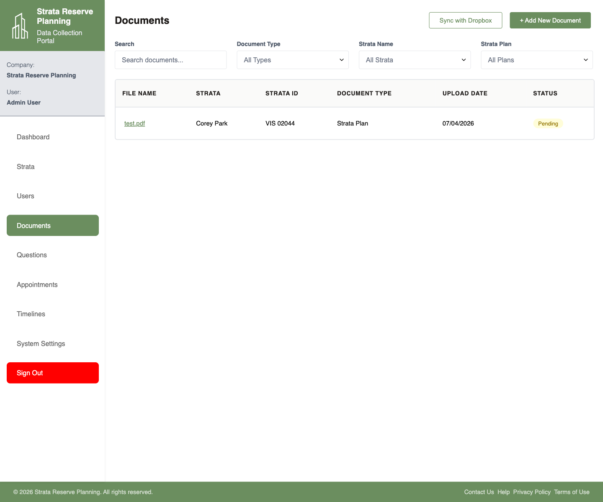
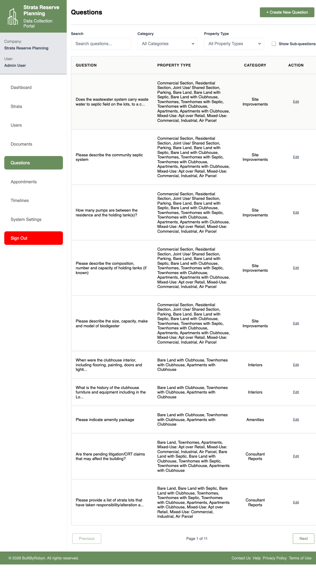
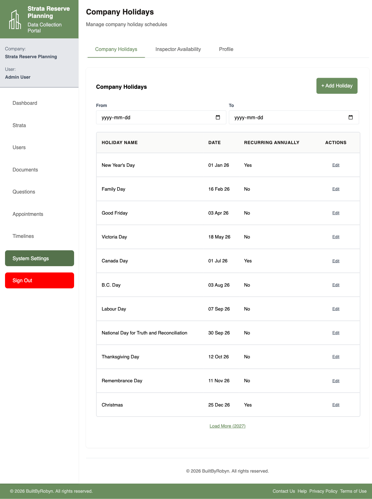

Admin Portal Guide
This guide combines the local admin walkthrough notes from the admin/ directory with fresh screenshots captured from the live demo admin account. It follows the same document order as the original admin training set.
Login & Dashboard
The admin portal starts on the same login page as the client portal, but the authenticated experience changes into the admin workspace after sign-in.
- Open the portal URL and sign in with the admin email and password.
- After login, review the metrics cards for Active Requests, Pending Approvals, Appointments This Week, and Total Active Strata.
- Use the Shortcuts block for fast access to high-frequency admin actions such as creating strata, creating users, adding appointments, uploading documents, or adding inspector availability.
- Review the Urgent Actions cards for account activations, rebooking needs, and other items requiring follow-up.
- Use the left navigation to move into the dedicated admin modules.


Strata Management
The strata page is the main entry point for browsing and maintaining strata records, including active and optionally inactive plans.
- Open Strata from the left navigation.
- Use the filters for strata name, strata plan, property type, and city to narrow the list.
- Enable Show Inactive when you need to expose strata without an active file.
- Use Create New Strata to add a new record when required, making sure all required fields are present.
- Select Edit for an existing strata when the record needs maintenance or review.

Strata Active File
The local admin guide explains that once a strata has an active file, deeper request details become available, including answers, archives, documents, notes, downloads, and appointment-offer tools.
- Start from the relevant strata record in the Strata list.
- Open the active file details for the specific strata request when you need to review live answers, archived changes, notes, or request-level actions.
- Use the request-level tools for downloading documents, exporting survey answers, and offering appointments only when you are ready for the client side to move forward.
- Treat notes in this area as internal-only administrative notes.
Activating a File Number
Activation begins either from a manual file creation flow or from a client-requested activation waiting on the admin dashboard.
- Check the Urgent Actions area on the dashboard for activation requests from clients whose strata do not yet have an active file.
- Review the activation request and decide whether to approve or deny it.
- If approved, create or assign the new file number and continue into request-specific configuration for documents and survey questions.
- If denied, add the explanatory note so the client can see why the request was rejected.
- Finalize the file configuration only when the request is ready for the client side to begin data entry.
User Management
The users page manages both internal staff and client accounts, with filters for strata, role, and property types.
- Open Users from the left navigation.
- Use the search field and the role or strata filters to find the right person.
- Use Create New Users when a new internal or client account is required.
- Use Edit to update existing user details, roles, or client-to-strata assignments.
- Remember that invitations are email-based and can be resent if onboarding mail is missed.

Document Management
The documents page is the administrative document hub, including Dropbox sync and manual document intake.
- Open Documents to review uploaded records and search by document type, strata name, or strata plan.
- Use Add New Document when uploading a file directly from the admin side.
- Use Sync with Dropbox when uploaded files have been moved or removed outside the portal and the portal needs to refresh orphaned records.
- Review client-submitted records through the strata-side review flow before finalizing approvals.

Appointment Management
The local guide describes the appointments module as the place for manual appointment creation, override scheduling, and cancellation or completion workflows.
- Use the appointments tools when you need to create or override a booking directly from the admin side.
- Update appointment status to completed once an inspection or draft meeting has taken place.
- If an appointment is cancelled, record the reason so the client sees the correct rebooking prompt.
- Use rebooking reminders when clients have not yet chosen replacement dates.
Timeline Management
Timeline management is the admin-side view for non-appointment deadlines tied to active file numbers, including AGM and depreciation report dates.
- Use the timelines module to review file-specific deadlines and filter between future and past dates.
- Remember that factual system dates such as file opened, documents finalized, and survey finalized are not editable.
- Edit only the manually managed dates, such as AGM or last-report dates, when an update is needed.
- Expect timeline changes to be visible on the client side.
Question Filtering
The questions module is the global question bank for the portal and affects all strata and files when changed.
- Open Questions from the left navigation.
- Use the search field, category filter, property type filter, and Show Sub-questions toggle to isolate the questions you need.
- Use Create New Question for global question additions.
- Use Edit to adjust existing questions, categories, services, or sub-question links.
- Remember that this module is global, while file-specific customization belongs in request-specific configuration.

System Settings
The system settings area covers profile maintenance, company holidays, and inspector availability management.
- Open System Settings from the admin navigation.
- Use the tab controls to switch between Company Holidays, Inspector Availability, and Profile.
- Review or add company holidays carefully, paying attention to whether a date really should recur annually.
- Use the availability tools to manage inspector scheduling and location-specific availability windows.

Deleting a File
File deletion is an administrator-only cleanup step used after a request is fully complete and the original file needs to be closed before a new one is created.
- Confirm the file is truly complete and that any survey answers needing retention have already been exported.
- Understand that deleting the file clears the active request state, removes associated answers and statuses from the live request, and moves uploaded files into the completed storage location.
- Use deletion only when you are sure the strata should return to an inactive state before a future request is opened.